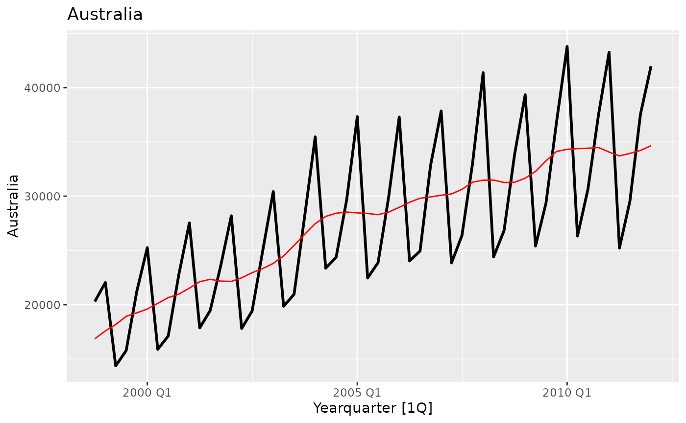
visitors_fit <- fit_model(visitors_ts, Australia, method = "arima")
visitors_fit
#>
#> ── Model of Australia
#> Warning: Model has not been checked for assumptions.
plot(visitors_fit)
#> Plot variable not specified, automatically selected `.vars = Australia`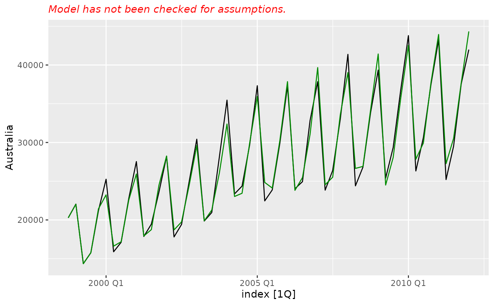
Without any model checking, outputs show warnings.
To check the model, we can use the check_model function. This will launch an interactive process where we can check the model assumptions are satisfied.
visitors_checked <- check(visitors_fit)
visitors_checked
#>
#> ── Model of Australia
plot(visitors_checked)
#> Plot variable not specified, automatically selected `.vars = Australia`
Approx outline of what we are aiming for:
library(dplyr)
#>
#> Attaching package: 'dplyr'
#> The following objects are masked from 'package:stats':
#>
#> filter, lag
#> The following objects are masked from 'package:base':
#>
#> intersect, setdiff, setequal, union
library(ggplot2)
library(fpp3)
#> ── Attaching packages ────────────────────────────────────────────── fpp3 0.5 ──
#> ✔ tibble 3.2.1 ✔ tsibbledata 0.4.1
#> ✔ tidyr 1.3.1 ✔ feasts 0.3.2
#> ✔ lubridate 1.9.3 ✔ fable 0.3.4
#> ✔ tsibble 1.1.4 ✔ fabletools 0.4.2
#> ── Conflicts ───────────────────────────────────────────────── fpp3_conflicts ──
#> ✖ lubridate::date() masks base::date()
#> ✖ dplyr::filter() masks stats::filter()
#> ✖ tsibble::intersect() masks base::intersect()
#> ✖ tsibble::interval() masks lubridate::interval()
#> ✖ dplyr::lag() masks stats::lag()
#> ✖ tsibble::setdiff() masks base::setdiff()
#> ✖ tsibble::union() masks base::union()
# Read in data
data <- aus_arrivals |>
filter(Origin == "NZ") |>
select(Arrivals)
# Seasonal frequency
s.freq <- 4 # Need to automate
# Look at time plot
data |>
autoplot(Arrivals)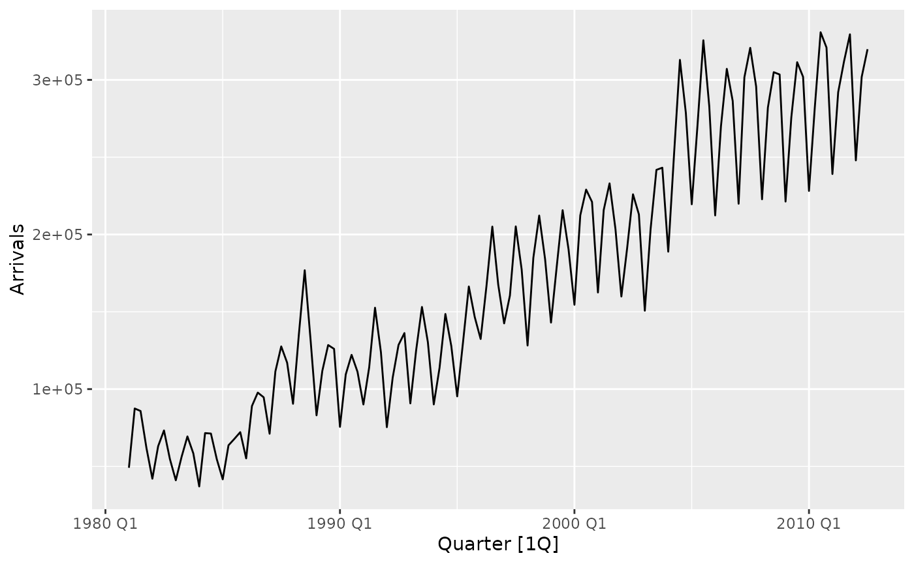
# Does it need a transformation to stabilise the variance?
lambda <- data |>
features(Arrivals, features = "guerrero") |>
pull() # Box-Cox parameter
data |>
autoplot(box_cox(Arrivals, lambda))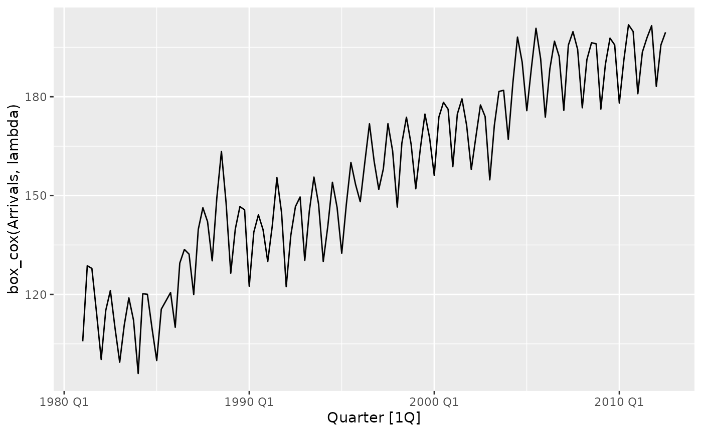
# Variance has been stabilised
# Does it need a seasonal difference to stabilise autocovariance?
data |>
autoplot(difference(box_cox(Arrivals, lambda), s.freq))
#> Warning: Removed 4 rows containing missing values or values outside the scale range
#> (`geom_line()`).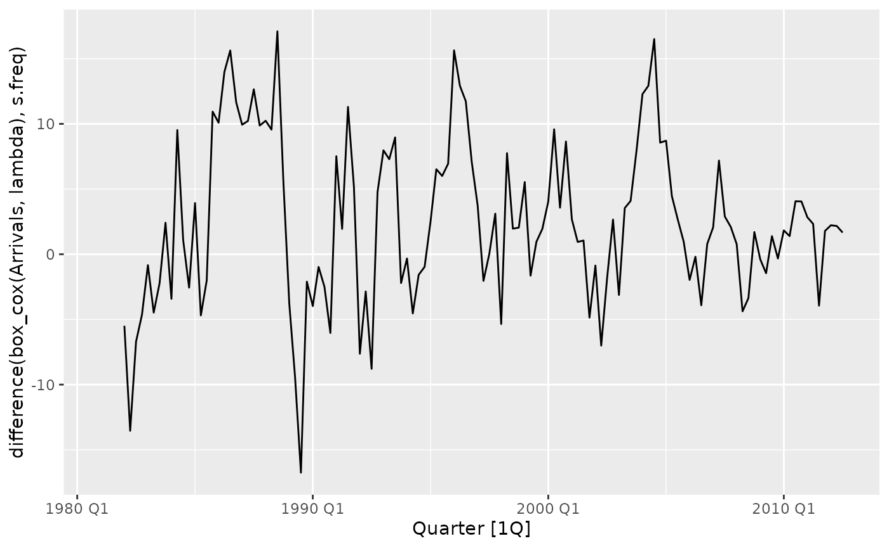
data |>
features(box_cox(Arrivals, lambda), "unitroot_nsdiffs")
#> # A tibble: 1 × 1
#> nsdiffs
#> <int>
#> 1 1
# Therefore D = 1. Autocovariance stabilised.
# Does it need a first difference to stabilise the mean?
data |>
autoplot(difference(box_cox(Arrivals, lambda), s.freq)
|> difference(1))
#> Warning: Removed 5 rows containing missing values or values outside the scale range
#> (`geom_line()`).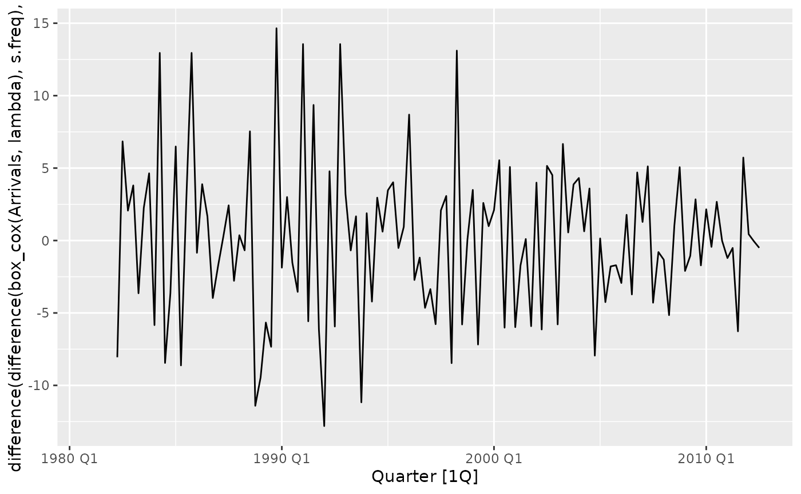
data |>
features(
difference(box_cox(Arrivals, lambda), s.freq),
"unitroot_ndiffs"
)
#> # A tibble: 1 × 1
#> ndiffs
#> <int>
#> 1 0
# Therefore d = 0. Mean stable.
# What are some appropriate candidate models?
data |>
gg_tsdisplay(difference(box_cox(Arrivals, lambda), s.freq),
plot_type = "partial"
)
#> Warning: Removed 4 rows containing missing values or values outside the scale range
#> (`geom_line()`).
#> Warning: Removed 4 rows containing missing values or values outside the scale range
#> (`geom_point()`).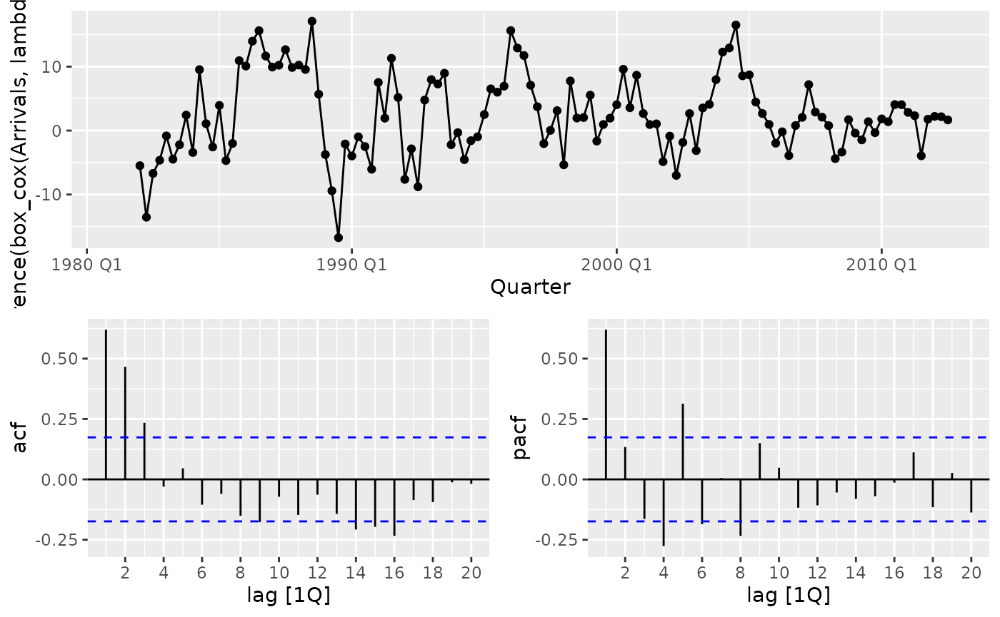
# Take combinations of these: MA(3), AR(1), SMA(0), SAR(2).
# Get user to input numbers.
fit <- data |>
model(
m1 = ARIMA(box_cox(Arrivals, lambda) ~ pdq(0, 0, 3) + PDQ(0, 1, 0)),
m2 = ARIMA(box_cox(Arrivals, lambda) ~ pdq(0, 0, 3) + PDQ(2, 1, 0)),
m3 = ARIMA(box_cox(Arrivals, lambda) ~ pdq(1, 0, 0) + PDQ(0, 1, 0)),
m4 = ARIMA(box_cox(Arrivals, lambda) ~ pdq(1, 0, 0) + PDQ(2, 1, 0)),
auto = ARIMA(box_cox(Arrivals, lambda))
)
# Find model with best predictive ability
fit |>
glance() |>
arrange(AICc)
#> # A tibble: 5 × 8
#> .model sigma2 log_lik AIC AICc BIC ar_roots ma_roots
#> <chr> <dbl> <dbl> <dbl> <dbl> <dbl> <list> <list>
#> 1 auto 16.4 -346. 705. 706. 725. <cpl [6]> <cpl [8]>
#> 2 m1 18.0 -352. 713. 714. 727. <cpl [0]> <cpl [3]>
#> 3 m4 18.1 -352. 714. 715. 728. <cpl [9]> <cpl [0]>
#> 4 m2 17.8 -350. 714. 715. 733. <cpl [8]> <cpl [3]>
#> 5 m3 24.3 -370. 746. 746. 754. <cpl [1]> <cpl [0]>
# Extract best model
fit |>
select(auto) |>
report()
#> Series: Arrivals
#> Model: ARIMA(2,0,0)(1,1,2)[4] w/ drift
#> Transformation: box_cox(Arrivals, lambda)
#>
#> Coefficients:
#> ar1 ar2 sar1 sma1 sma2 constant
#> 0.6094 0.2271 -0.7205 0.0379 -0.7170 0.7390
#> s.e. 0.0900 0.0913 0.1994 0.1838 0.1334 0.1329
#>
#> sigma^2 estimated as 16.37: log likelihood=-345.65
#> AIC=705.3 AICc=706.28 BIC=724.99
# Are the model assumptions met? Check residuals (or innovation residuals)
# Independence, normality, constant variance, zero mean.
fit |>
select(auto) |>
gg_tsresiduals()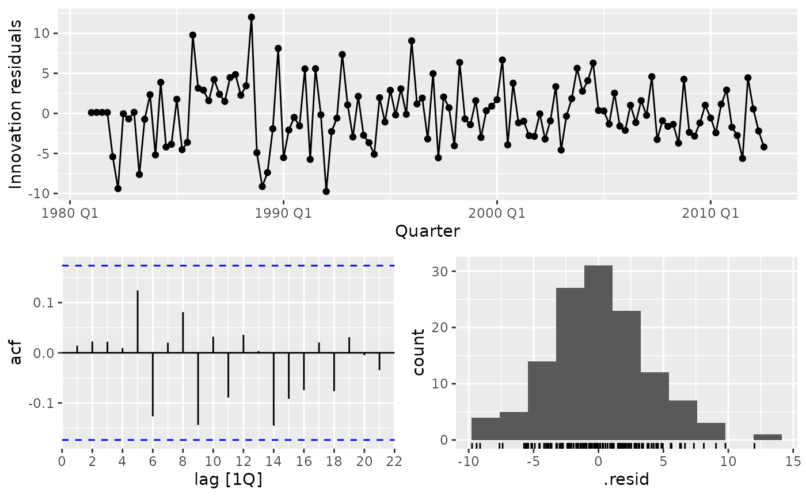
# Looks good!
# May want to verify using hypothesis tests
# Ljung-Box test
fit |>
select(auto) |>
augment() |>
features(.innov,
features = ljung_box,
lag = 2 * s.freq,
dof = 6
) # Need to automate this
#> # A tibble: 1 × 3
#> .model lb_stat lb_pvalue
#> <chr> <dbl> <dbl>
#> 1 auto 5.38 0.0678
# No residual autocorrelation in innovation residuals
# Therefore forecast
fit |>
select(auto) |>
forecast(h = 16) |>
autoplot(data)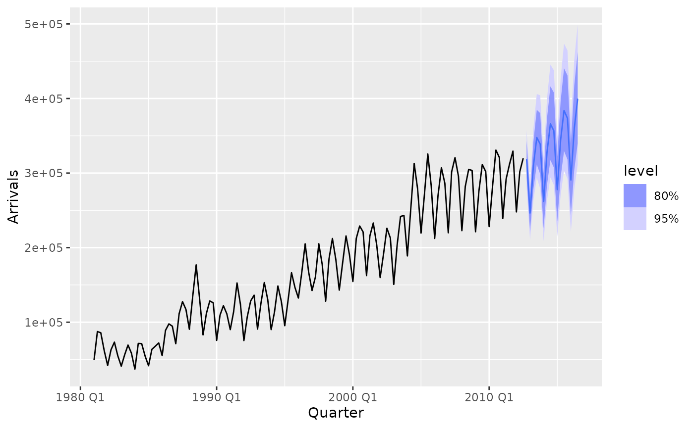
# Ideas for hypothesis tests:
# Independence: Random shuffle surrogate data test
# Stationarity: Could do each three assumptions separately.
# Polar form of FFT. Keep amplitude. Randomise phase.
# Example 1: Data set is a numeric vector
# Simulated AR(1): Should not be independent
set.seed(1)
data <- arima.sim(
n = 256,
model = list(ar = 0.35)
) # Simulate data
s <- surrogate_independence(data, lag = 10) # Run surrogate test
#> ! Fewer than 10 permutations in the tail
s$p.value # Extract p-value
#> [1] 0.001
s %>%
plot() +
theme_bw() +
labs(title = "Surrogate data test with Ljung-Box statistic")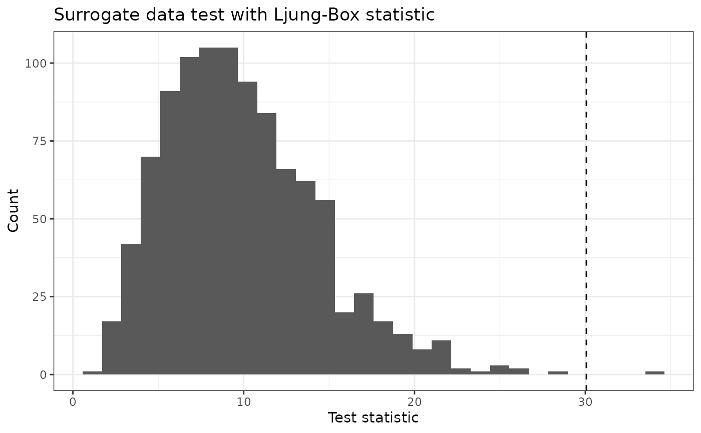
# Example 2: Data set is a tsibble object
# Simulated white noise: Should be independent
data <- tsibble::tsibble(
Value = rnorm(256),
Time = 1:256,
index = Time
)
s <- surrogate_independence(data,
lag = 8, R = 5000,
test.stat = "box-pierce"
) # Run surrogate test
s$p.value # Extract p-value
#> [1] 0.4268
s %>%
plot() +
theme_bw() +
labs(title = "Surrogate data test with Box-Pierce statistic")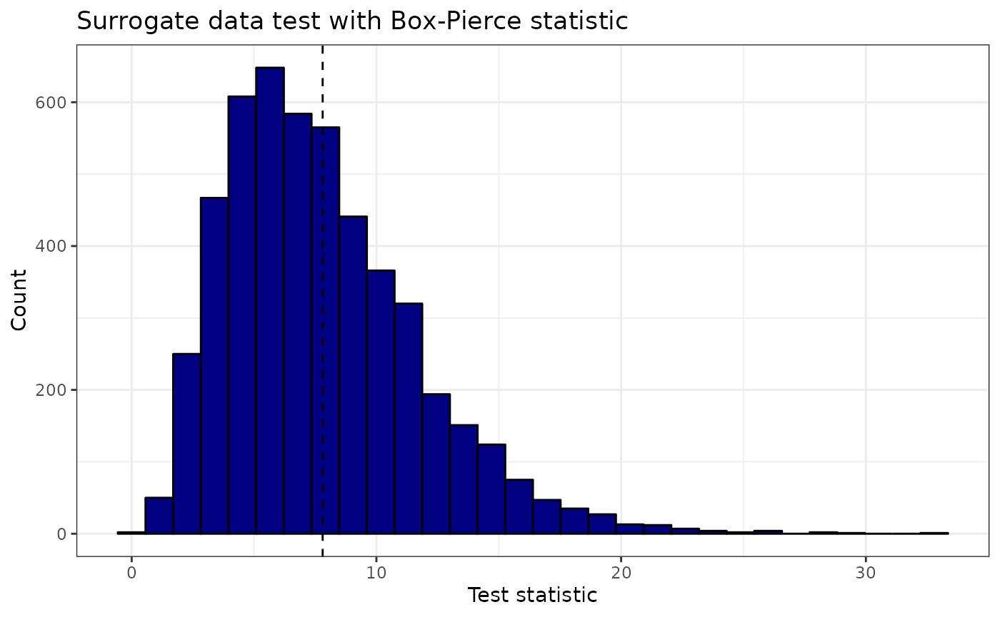